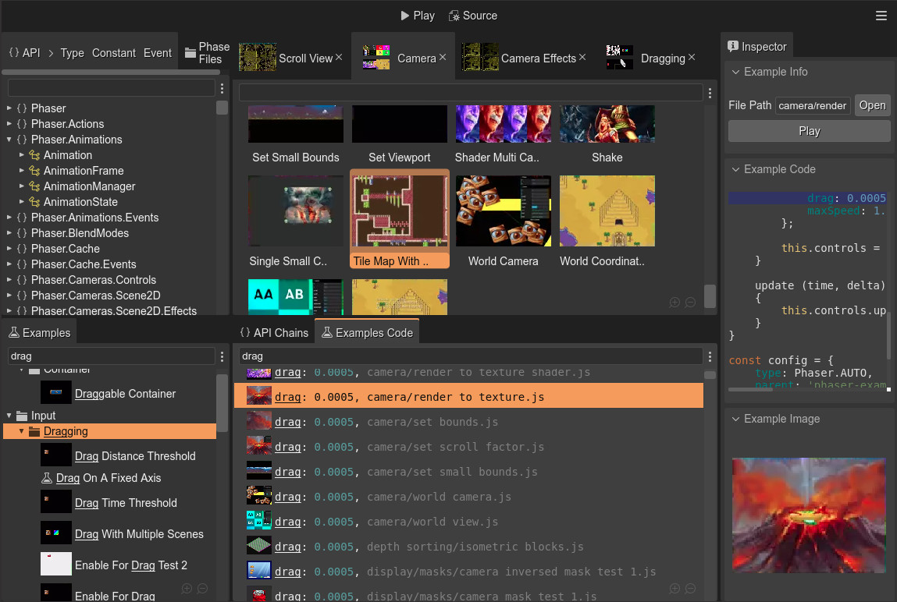

Phaser Editor 2D
A web-based IDE
for HTML5 game development.
Editor 3.67.0 / Phaser 3.80

Notice:
Phaser Editor has moved! Visit the new site for the latest version and all resources.
Click here to explore Phaser Editor at phaser.io
A web-based IDE
for HTML5 game development.
Editor 3.67.0 / Phaser 3.80
Hey there! Be the first to know about our latest releases, products, tutorials, and promo discounts.
Sign up for our newsletter today


this.load.pack(...).

C:/> uPhaserHelpCenter.exeCross-platform, advanced app for:

22 February 2024 The latest version of Phaser Editor 2D has just rolled out! This release includes an exciting new feature: the Shader Effects! It also adds support to new ways of editing numeric inputs in the... Read more

12 January 2024 The latest version of Phaser Editor 2D has just rolled out! This version coincides with the release of Phaser v3.80 and has been updated to fully support it. It also adds a new way to visually edit... Read more
07 January 2024 Dear, As I announced in my previous post, we are integrating Phaser Editor 2D into the new Phaser Studio services. Merging into a company, in addition to funding the Phaser Editor 2D development,... Read more
05 January 2024 Hi! I have joined the Phaser Studio team as their Senior Tools engineer. Phaser Studio is a new company led by Richard Davey. The goal of this company is "to modernize the Phaser framework". This is... Read more

13 December 2023 Hi! I'm glad to announce the latest release of Phaser Editor 2D. This update is a significant milestone as it includes script libraries, bringing us one step closer to implementing a visual... Read more

30 November 2023 Hi! Emanuele Feronato, an experienced game developer and author of the book HTML5 Cross Platform Game Development Using Phaser 3, just wrote a new tutorial about starting with Phaser Editor 2D. Is it... Read more

27 November 2023 Hi friends, This Monday is cyber and Phaser Editor 2D is 60% off! Follow the link: cybermonday2023 Kind regards, Arian... Read more

22 November 2023 Hi friends! The Black Friday sales just started in Phaser Editor 2D! Purchase Phaser Editor 2D Lifetime License Today, with a 50% off discount. Happy Thanksgiving! Happy Friday! Arian... Read more

13 November 2023 Hi! I just updated uPhaserHelpCenter to support Phaser v3.70.0. Get a look and search for "setDirectControl" 🤓 Get the uPhaserHelpCenter binaries Or try it online:... Read more

09 November 2023 Hi! Today I'm releasing a new version of Phaser Editor 2D. This new release includes a couple of new features for boosting your workflow with Sprite animations. It also adds support for Aseprite, a... Read more
Making your first Phaser game.

By Phaser Editor 2D
These series of videos follow step by step the official Phaser tutorial made by Richard Davey, author of Phaser.
A series of videos for making your first game with Phaser & Phaser Editor 2D.
It is a basic game. You are Phaser character jumping around a world of platforms, and collect stars.
When you collect all the stars, new stars appears... and a bomb!
You should avoid those bombs. If you touch a bomb, you lose.
Part 1: Introduction.
Setup a Phaser project with Phaser Editor 2D.

Part 2: Loading Assets.
Add the images & spritesheets to the asset pack file. Create your first scene.

Part 3: World Building.
Add objects to the scene. Make the platform prefab. Add physics to a prefab.

Part 4: The Platforms.
Group the platforms with an Object List (array). Refresh the static physics bodies of the platforms. Merge user code with generated code.

Part 5: The Player
Create the player prefab and add physics to it. Create the player animations. Create a user property for auto-player the player animation.

Part 6: Adding Physics.
Add a collider for testing interaction between the player and the platforms. Add platforms to a Layer.

Part 7: Controlling the Player.
Add cursor keys to the scene for controlling the player. Animate the player.

Part 8: Collecting Stars
Add the stars and layout them. Add a collider/overlap for collecing the stars. Refactor the level & prefabs.

Part 9: Scores and Scoring.
Create a score Text object & prefab. Update the score text when the player takes a star.

Part 10: Bouncing Bombs.
Respawn the stars & restart physics bodies. Spawn the bombs.
Ourcade.co is an amazing (third-party) website full of content for learning and mastering Phaser game development.
It also provides online tools and components to boost your productivity.
Preloader Scene in Phaser Editor 2D

By SuperTommy at Ourcade.co
We've got another video going over the use of PhaserEditor2D!
This time it is about creating a Preloader Scene to let players know that assets are being loaded before a game starts. Combine it with the Apple loading indicator from the blog post above!
PhaserEditor2D's project structure is a little bit different than the code-only project set-up that we usually use so this video goes over the things you need to know.
Memory Match in Phaser Editor 2D - A Mario Party-style Memory Game

By SuperTommy at Ourcade.co
This is a series for creating a Memory Match game with Phaser Editor 2D as found in Mario Party! 🎉 It takes the conceptually simple memory game mechanics and spices it up as only Nintendo can. You use a character to select boxes and find all matches before the time runs out.
Create a Character in Phaser Editor 2D for Memory Match - Part 1
In part 1, we use Kenney's Sokoban assets to create a character that can walk up, down, left, and right. Learn how to create a new Phaser Editor 2D project, add images, and create animations!

Use Prefabs to Create Boxes in Phaser Editor 2D for Memory Match - Part 2
In part 2, we use the concept of Prefabs to create instances of boxes that share the same template and can be updated at the same time to layout the design of a level.

Components to Add Box Reveal in Phaser Editor 2D for Memory Match - Part 3
In part 3, we use User Components to add logic and functionality to boxes for revealing the item it is holding.

Checking for Matches in Phaser Editor for Memory Match - Part 4
In part 4, we implement checking for matches between boxes within the updated codebase that uses Components.

Determining Win Condition in Phaser Editor for Memory Match - Part 5
In part 5, we implement the logic for the evil bear and checking for the win condition when all matches are found.

Adding a Countdown Timer in Phaser Editor 2D for Memory Match - Part 6
In part 6, we add a countdown timer with User Components. Then we add a message when time's up and all matches have not been found.